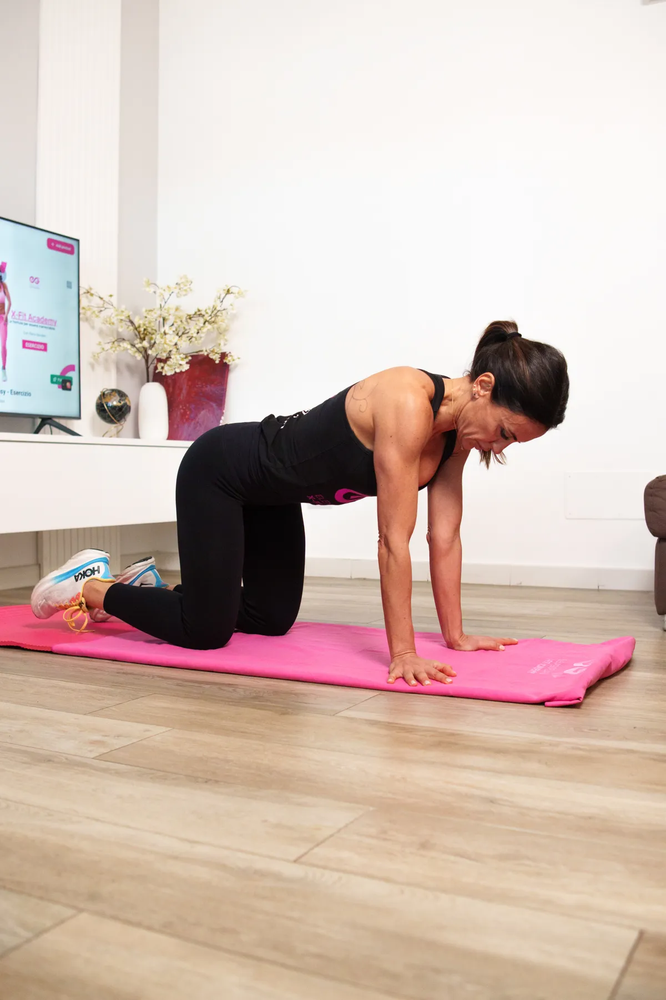

Non è una dieta.Non è un allenamento.È un cambio di vita.
Il primo percorso in Italia dedicato esclusivamente alle donne.
Allenamento, alimentazione e supporto emotivo.
Perché si cambia dentro per cambiare fuori.
Il Sole 24 OreCorriere della SeraLa RepubblicaTGCom24Radio RadioDonne MagazineFatti ItalianiDiLeiEmilia Romagna News 24Il Sole 24 OreCorriere della SeraLa RepubblicaTGCom24Radio RadioDonne MagazineFatti ItalianiDiLeiEmilia Romagna News 24
IL SOLE 24 ORE
Dalla palestra al Sole 24 Ore
La storia vera di come Elena ha trasformato la sua vita e quella di migliaia di donne, raccontata da Il Sole 24 Ore
"
Non ho costruito un business. Ho costruito un movimento di donne che hanno deciso di non mollare mai più.
Perché hai provato tutto ma non hai ottenuto risultati definitivi?
La verità che nessuno ti ha mai detto sui programmi di fitness tradizionali
Gli Altri Programmi
Pacchetti a tempo
1 settimana, 3 mesi, 6 mesi... poi finisce e torni al punto di partenza
Video registrati
Allenamenti pre-registrati senza interazione, correzione o motivazione reale
Diete rigide
Piani alimentari impossibili da seguire nella vita vera, che finiscono in abbuffate
Risultati temporanei
Perdi peso durante il programma, riprendi tutto (e anche di più) appena finisce
Nessun cambio di mentalità
Ti dicono COSA fare, ma non ti insegnano a PENSARE diversamente
Sei sola
Gruppo Facebook generico dove nessuno ti conosce davvero
X-Fit Academy
Percorso di trasformazione
Non ha una scadenza, perché cambi TU come persona, non solo il corpo per 3 mesi
Allenamenti in DIRETTA LIVE da casa
Elena ti allena in diretta, ti corregge, ti motiva, ti vede e ti conosce
Alimentazione sostenibile
Impari a mangiare per sempre, non "a dieta". Niente rinunce assurde o pesature maniacali
Risultati definitivi
Perché non cambi solo il corpo: cambi identità, abitudini e il modo in cui ti tratti. E quando ti trasformi così, non torni più alla donna di prima.
Cambi modo di pensare
Capisci che la tua salute è non negoziabile e che il tuo benessere diventa la tua vera priorità.
Community vera
Gruppo di donne che si conoscono, si supportano e crescono insieme
"Non vengo a dirti che in un mese cambierai la tua vita. Ti dico che se decidi di lavorare su te stessa, non tornerai mai più quella di prima. Perché non si tratta di perdere peso. Si tratta di capire che la tua salute è qualcosa di non negoziabile."
— Elena Giordani, Fondatrice X-Fit Academy
Come funziona X-Fit Academy
Un percorso strutturato in 3 fasi per una trasformazione definitiva
01
Restart Metabolico
Ritrova energia, sgonfia il corpo, riaccendi il metabolismo. È la fase in cui tutto ricomincia: impari a nutrirti nel modo giusto, ad allenarti in base ai tuoi ormoni e a ridurre l'infiammazione che ti impediva di cambiare. Qui inizi a sentire la differenza — più leggerezza, più vitalità, più controllo.
Allenamenti mirati e progressivi
Piano alimentare anti-infiammatorio
Check-up e monitoraggio costante di corpo e mindset
02
Ricomposizione Corporea
Il corpo cambia, la forma si definisce, l'energia cresce. In questa fase il metabolismo è attivo e il tuo corpo inizia a trasformarsi davvero: la massa magra aumenta, il grasso si riduce e la qualità muscolare migliora. Ti vedi più tonica, più compatta, più forte — fuori e dentro.
Workout specifici per gambe, glutei e addome
Nutrizione evolutiva e consapevole per risultati visibili
Coaching motivazionale per restare costante
03
Consolidamento e Identità
Il cambiamento diventa la tua nuova identità. In questa fase impari a mantenere risultati e benessere nel tempo, senza rinunce né ossessioni. Costruisci una mentalità stabile, disciplinata e leggera: la vera identità della Donna Inarrestabile.
Strategie di mantenimento e anti-ricaduta
Approccio olistico e gestione dello stress
Mentalità e rituali dell'Inarrestabile
La vera trasformazione

Che allenamenti troverai nell'Academy?
Nell'X-Fit Academy non fai sempre gli stessi workout: segui un metodo evolutivo, pensato per il corpo femminile e per farti migliorare in modo costante, sicuro e progressivo.
Fitness metabolico e brucia-grassi
Per riattivare il metabolismo, ridurre gonfiore e adiposità localizzate (fianchi, pancia, gambe), aumentare energia e tono.
Sessioni drenanti e tonificanti
Allenamenti specifici per gambe e glutei, perfetti per chi soffre di ritenzione, infiammazione o pesantezza.
Cardio funzionale
Studiato per stimolare la lipolisi senza sovraccaricare le articolazioni o alzare troppo il cortisolo.
Yoga, Pilates e Posturale
Per ritrovare mobilità, elasticità, respiro e connessione mente-corpo, e prevenire dolori e rigidità.
Classi evolutive e progressioni mensili
Ogni mese lavori su un focus diverso (forza, resistenza, definizione, postura, energia). Non ti annoi, non stalli, e soprattutto non fai mai allenamenti a caso.
La X-Fit Academy è l'unico percorso diverso
Unisce allenamento scientifico e approccio olistico, forza e grazia, disciplina e ascolto.
È pensato per farti ottenere un corpo tonico e femminile… e una vita più leggera, energica e stabile.
RISULTATI
Prima e Dopo
Oltre 2300 trasformazioni reali con il Metodo E.A.S.Y.
Non è fortuna. Non è genetica. È il Metodo E.A.S.Y.
Ogni trasformazione che hai appena visto non è il risultato di diete miracolose o allenamenti impossibili. È il frutto di un metodo scientifico, strutturato e sostenibile che Elena Giordani ha perfezionato in 20 anni di esperienza.
E
A
S
Y
Un acronimo che racchiude 4 pilastri fondamentali per una trasformazione definitiva
E
Educazione Alimentare
Non ti do una dieta da seguire per 3 mesi. Ti insegno a mangiare per tutta la vita. Impari a scegliere, a dosare, a costruire i tuoi pasti in autonomia. Senza pesare nulla, senza rinunce assurde, senza sensi di colpa.
Alimentazione sostenibile nella vita reale
Gestione delle occasioni sociali
Zero sensi di colpa, massima flessibilità
A
Allenamento Progressivo
Niente allenamenti da bodybuilder. Niente video pre-registrati che non ti correggono mai. Sessioni LIVE dove Elena ti vede, ti corregge e ti motiva in tempo reale. L'intensità cresce con te, senza forzature.
Allenamenti LIVE da casa
Correzioni personalizzate in diretta
Progressione graduale e sostenibile
S
Supporto Continuo
Il giorno 3 è quando l'85% delle persone molla. Noi lo sappiamo e siamo lì proprio in quel momento. Non sei mai sola: community, gruppo WhatsApp, supporto psicologico quando serve.
Community di donne inarrestabili
Intervento nei momenti critici
Y
You First (Tu Prima di Tutto)
Il vero cambio di mentalità. La tua salute non è negoziabile. Non è egoismo prenderti cura di te. È responsabilità. Impari a mettere te stessa al primo posto, senza sensi di colpa, perché una donna che sta bene può dare di più a chi ama.
Cambio di mentalità definitivo
Zero sensi di colpa
Salute come priorità non negoziabile
Perché il Metodo E.A.S.Y. Funziona?
01
Non è temporaneo
Non ha una data di scadenza. Non finisce dopo 90 giorni. È un cambiamento che diventa parte di te.
02
È scientifico
Basato su 20 anni di esperienza sul campo con migliaia di donne. Non è teoria, è pratica testata.
03
È sostenibile
Si adatta alla TUA vita, non il contrario. Lavori, hai figli, hai impegni? Il metodo si modella su di te.
04
Ti rende autonoma
L'obiettivo è che tu NON abbia più bisogno di noi. Ti insegniamo a camminare da sola, per sempre.
"Le +2300 trasformazioni che hai visto non sono il risultato di un programma standard. Sono 2300 donne diverse, con 2300 percorsi personalizzati, tutte unite da una cosa: hanno applicato il metodo E.A.S.Y. e non hanno mollato."
— Elena Giordani, Fondatrice X-Fit Academy
IL NOSTRO METODO
Perché l'Academy è solo annuale
Non è un limite. È una scelta metodologica precisa che garantisce trasformazioni reali e durature.
Perché funziona
Il corpo ha bisogno di tempo biologico. Le vere trasformazioni ormonali, metaboliche e muscolari non avvengono in 30 giorni. Servono cicli completi per consolidare i risultati.
Il supporto continuativo elimina l'effetto yo-yo. I programmi brevi finiscono quando inizi ad avere risultati, lasciandoti sola proprio nel momento più delicato.
La community diventa una rete reale. In 12 mesi si creano legami autentici, amicizie vere, un sistema di supporto che va oltre il percorso.
Gli eventi fisici scandiscono milestone concrete. 2-3 incontri annuali per ritrovarsi, abbracciarsi e celebrare insieme ogni tappa del cambiamento.
Cosa significa per te
Finalmente qualcuno che non promette miracoli in 30 giorni. Serietà, professionalità e rispetto per il tuo corpo e la tua storia.
Elena non ti abbandona a metà strada. Per 12 mesi hai la sua presenza costante, il supporto del team e della community.
Investire su te stessa merita protezione nel tempo. Non un "programma lampo", ma un anno che cambia il resto della tua vita.
Diventi una donna inarrestabile, non solo una che ha perso peso. La trasformazione profonda parte dalla mente, e la mente ha bisogno di tempo per riprogrammarsi.
L'Academy non è per chi cerca soluzioni rapide o scorciatoie. È per donne che vogliono fare le cose bene, una volta per tutte. Dodici mesi per ritrovare te stessa, riconquistare il tuo corpo e costruire abitudini che dureranno per sempre. Questo è il nostro impegno. E il tuo investimento più importante.
Non ti chiediamo di fidarti ciecamente. Ti mostriamo chi c'è dietro ogni risultato.
X-Fit Academy non è solo fitness. È scienza applicata al corpo femminile, validata da professionisti di eccellenza internazionale che ogni giorno studiano, ricercano e applicano protocolli per la tua salute.
Medico Oncologo
Dott.ssa Federica Cuppone
Medico Oncologo e Dirigente presso AIFA (Agenzia Italiana del Farmaco)
Laureata e specializzata con lode presso Università "La Sapienza" di Roma
Esperienza clinica presso Istituto Tumori Regina Elena e Memorial Sloan Kettering Cancer Center (New York)
Autrice di pubblicazioni scientifiche su riviste internazionali
Per le donne dell'Academy: Valutazione scientifica dell'impatto dell'attività fisica e dell'alimentazione sui processi infiammatori e sulla prevenzione oncologica.
Genetista
Alessandro Lisi, PhD
Ricercatore in Genetica e Biologia Umana University of Southern California (USC)
Dottorato in antropologia molecolare e genetica umana
Premio Miglior Presentazione e Progetto Innovativo - ASHG Washington 2024
Award internazionale 2025 per ricerca su telomeri e patologie genetiche
Ricerca attiva su: diabete tipo 2, percezione del gusto, sistema endocrino, invecchiamento
Per le donne dell'Academy: Analisi scientifica della risposta genetica individuale all'alimentazione, all'attività fisica e ai processi di invecchiamento cellulare.
Psicoterapeuta
Dott.ssa Floriana Mariotti
Psicologa, Psicoterapeuta e Sessuologa Clinica
Specializzazione: Lavoro clinico con le donne, desiderio, regolazione emotiva, relazione con il corpo
Integrazione tra psicoterapia, neurofisiologia e ricerca sul benessere femminile
Studio approfondito dell'impatto dell'attività fisica sui processi psicologici
Specializzazione in momenti critici e cambiamenti della vita femminile
Per le donne dell'Academy: Accompagnamento nei momenti di transizione (pre-menopausa, menopausa, cambiamenti identitari) con approccio scientifico centrato sull'esperienza soggettiva.
Fisioterapista
Luca Cara
Fisioterapista specializzato in riabilitazione ortopedica e gestione dell'atleta
Competenza avanzata nella valutazione e trattamento della diastasi addominale
Protocolli personalizzati per post-gravidanza, pre-menopausa e menopausa
Approccio integrato: riequilibrio posturale + rinforzo del core + prevenzione
Per le donne dell'Academy: Ritrovare funzionalità, forza e stabilità con protocolli scientifici adattati al corpo femminile nelle diverse fasi della vita.
"Ho voluto circondarmi dei migliori professionisti che conosco. Non per fare scena, ma perché tu meriti risposte vere, basate su scienza, ricerca e competenza. Non ti vendo illusioni. Ti offro un metodo validato da chi studia il corpo femminile ogni singolo giorno."
— Elena Giordani, Fondatrice X-Fit Academy
Ma quanto costa?
È la domanda che tutti si fanno. Ed è giusto che tu la faccia. Ma c'è una cosa che devi sapere prima...
Non esiste un prezzo fisso
X-Fit Academy non è un programma standard che va bene per tutte. Ogni donna è diversa. Ha obiettivi diversi, un corpo diverso, una vita diversa, esigenze diverse.
01
Prima ti ascoltiamo
Capiamo la tua situazione, il tuo obiettivo, dove sei ora e dove vuoi arrivare.
02
Poi analizziamo
Valutiamo il percorso necessario: quanto tempo serve, quale intensità, quale supporto ti serve.
03
Infine personalizziamo
Creiamo un piano su misura per te e definiamo l'investimento giusto per il tuo percorso specifico.
La verità è questa:
Non posso dirti un prezzo ora perché non so ancora cosa ti serve davvero. Sarebbe disonesto darti un numero senza averti ascoltata.
Quello che posso dirti è che l'investimento sarà proporzionale al percorso che costruiremo insieme. E sarà sempre trasparente, chiaro e concordato con te prima di iniziare.
Sei pronta? Candidati per entrare in X-Fit Academy
Hai visto come funziona, hai scoperto i risultati delle nostre donne inarrestabili, e hai capito perché siamo diverse da tutti gli altri programmi. Ora è il momento di decidere: vuoi essere la prossima?
Il primo passo inizia qui
X-Fit Academy non è per tutte. È per chi è stanca di tentativi falliti e vuole un metodo che funziona davvero. Clicca sul pulsante qui sotto per compilare il form di candidatura e raccontarci dove sei ora e dove vuoi arrivare. Se la tua candidatura viene accettata, un nostro tutor coach ti contatterà personalmente per parlare del tuo percorso.
Richiede solo 3 minuti per completare il form
Riceverai una risposta dal team entro 24-48 ore
Se qualificata, un tutor coach ti contatterà direttamente
Come funziona: Cliccando sul pulsante verrai portata al form di candidatura. Dopo averlo completato, il nostro team valuterà la tua candidatura e, se in linea con il metodo X-Fit Academy, un tutor coach dedicato ti contatterà per una conversazione personalizzata.
"Non è il momento perfetto che cambia le cose. È la decisione di iniziare che fa la differenza."
Iscriviti alla Newsletter
Ricevi tips settimanali, contenuti esclusivi e accesso anticipato ai nuovi percorsi di Elena.
Niente spam, solo contenuti di valore. Puoi cancellarti quando vuoi.
Iscrizione riuscita! Controlla la tua casella di posta.
Si è verificato un errore. Riprova tra qualche istante.
💌
Non perderti i prossimi contenuti
Iscriviti alla newsletter di Elena: tips settimanali, contenuti esclusivi e accesso anticipato ai nuovi percorsi.
Zero spam. Puoi cancellarti in qualsiasi momento.
Iscrizione riuscita! Controlla la tua casella di posta 🎉
Si è verificato un errore. Riprova tra qualche istante.